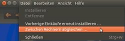
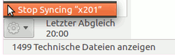
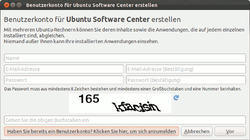
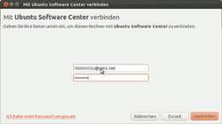
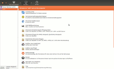
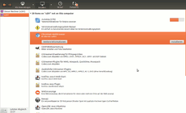

OneConf
Archivierte Anleitung
Dieser Artikel wurde archiviert, da er - oder Teile daraus - nur noch unter einer älteren Ubuntu-Version nutzbar ist. Diese Anleitung wird vom Wiki-Team weder auf Richtigkeit überprüft noch anderweitig gepflegt. Zusätzlich wurde der Artikel für weitere Änderungen gesperrt.
 In Verbindung mit dem Software-Center und einem Ubuntu One-Konto
In Verbindung mit dem Software-Center und einem Ubuntu One-Konto  sorgte OneConf dafür, dass man Daten zwischen zwei (oder mehreren) Rechnern abgleichen und speichern konnte. Der Hauptvorteil war, dass man nicht nur Musik oder Bilder, sondern auch installierte Programme und Einstellungen synchronisieren konnte.
sorgte OneConf dafür, dass man Daten zwischen zwei (oder mehreren) Rechnern abgleichen und speichern konnte. Der Hauptvorteil war, dass man nicht nur Musik oder Bilder, sondern auch installierte Programme und Einstellungen synchronisieren konnte.
Entworfen wurde OneConf von Didier Roche. Die Entwickler geben ihre Ziele wie folgt an: „OneConf ermöglicht es Anwendern, ihre Arbeit an einem Rechner ohne größere Unterbrechungen oder Eingriffe an einem anderen Rechner fortzuführen.“ Zusammengefasst lässt es sich auf diese Formel herunterbrechen: Die Grundidee hinter OneConf ist es, eine Liste der installierten Programme und deren Einstellungen und Zustände zu speichern.
Die Speicherung dieser Informationen erfolgte gemäß der Privacy Policy .
Installation¶
In einer Standard-Installation von Ubuntu ist OneConf ab Ubuntu 10.10 bereits enthalten, eine Installation ist also nicht notwendig. Bei Bedarf kann es über das Paket
oneconf
 mit apturl
mit apturl
Paketliste zum Kopieren:
sudo apt-get install oneconf
sudo aptitude install oneconf
nachinstalliert [1] werden.
Inbetriebnahme¶
 Man startet OneConf über das Software-Center mit "Datei -> Zwischen Rechnern abgleichen". Startet man diese Option das erste Mal, so erscheint der Ubuntu Single Sign-on Dialog (USS, SSO), der zum Anmeldung auffordert (siehe Bilderserie).
Nach der Anmeldung wird man zur Installations-Übersicht weitergeleitet. Der erste Computer in der Liste der linken Spalte ist immer der, an dem man sich gerade befindet. Hat man diesen angeklickt, sieht man in der rechten Spalte, welche Programme und Software auf diesem installiert sind.
Abgleich (Syncing)¶
Das Interessante ist die Sync-Funktion. Meldet man sich auf einem anderen Computer im Software-Center mit dem eigenen Ubuntu-Account an, so sieht man in der Installationsliste beide Rechner. Der obere beschreibt dabei immer den Rechner, an welchem man gerade arbeitet. Der zweite (andere) Rechner muss zum Abgleich nicht in Betrieb (online) sein.
Klickt man nun einen der beiden Computer in der Liste an, erscheinen in der rechten Spalte die Programme/Pakete, die sich nicht auf beiden Rechnern befinden. Somit ist es ein leichtes, die Programme auf beiden Rechner mit einem Klick abzugleichen. Dazu klickt man auf das jeweilige Programm, woraufhin sich ein Fenster mit zwei Schaltflächen öffnet: Die eine enthält "Weitere Informationen" zu dem Paket, die andere installiert dieses Paket auf dem gewünschten Rechner.

Abgleich stoppen¶
Natürlich kann man den Abgleich (Syncing) auch stoppen. Unten links in der Ecke findet man ein Zahnradsymbol. Ein Klick darauf zeigt die Option "Stop Syncing (Name des Rechners)". Des Weiteren sieht man dort, wann der letzte Abgleich des Rechners stattgefunden hat.
Experten-Info:
Die Synchronisation findet regelmäßig im Hintergrund statt, sobald man die Sync-Funktion aufruft. Links unten in der Ecke erscheint auch der Zeitpunkt des letzten Abgleichs. Alle Daten (auch die Sync-Liste) sind verlinkt mit dem eigenen Ubuntu-SSO.
Die Applikations- und Paketliste wird jedes Mal erneuert, wenn man eine Software oder ein Paket installiert. Dabei ist es unerheblich, welche Methode man zur Installation nutzt: Software-Center, apt-get, Synaptic, aptitude oder PPAs - alle installierten Pakete werden in der Sync-Liste angezeigt.
Der Dienst ist unter /usr/share/oneconf/oneconf-service zu finden.
Nutzungsszenarien¶
Ein Anwender möchte sein Ubuntu-System neu aufsetzen. Anstatt nun alle Einstellungen und Installationen der einzelnen Programme manuell durchzuführen, erledigt das OneConf.
Ein Anwender hat einen Desktop und ein Notebook. Der Anwender möchte bestimmte Anwendungen auf beiden Computern synchron halten.
Ein Anwender nutzt zwei Computer - einen privaten Rechner und einen Arbeitscomputer. Auf beiden Rechnern sind unterschiedliche Arten von Programmen (Beruf und Privat). Für jeden Computer kann man mit OneConf eine eigene unabhängige Liste mit den Anwendungen und Einstellungen abspeichern.
Bilder¶
|  |
| Benutzerkonto erstellen |
|  |
| Anmeldung |
|  |
| Software-Abgleich zweiter Rechner |
|  |
| Installation fehlender Programme |
Alternativen¶
Zu OneConf gibt es selbstverständlich auch Alternativen. So kann man sich auch selbst Paketlisten erstellen, anhand derer man Software und Pakete auch auf neue/andere Rechner übertragen kann.
Zukünftiges¶
In Zukunft soll es möglich sein, dass OneConf schon während der Installation gespeicherte Programme und Einstellungen wiederherstellt. Ist die Installation Ubuntus abgeschlossen, findet der Anwender alle Anwendungen und Einstellungen wieder so vor, wie er es gewohnt ist und braucht nichts mehr zu installieren oder konfigurieren.
Links¶
How to configure OneConf with Ubuntu One
- Blogbeitrag, 11/2010Paketverwaltung
 Übersichtsartikel
Übersichtsartikel
- Erstellt mit Inyoka
-
 2004 – 2017 ubuntuusers.de • Einige Rechte vorbehalten
2004 – 2017 ubuntuusers.de • Einige Rechte vorbehalten
Lizenz • Kontakt • Datenschutz • Impressum • Serverstatus -
Serverhousing gespendet von